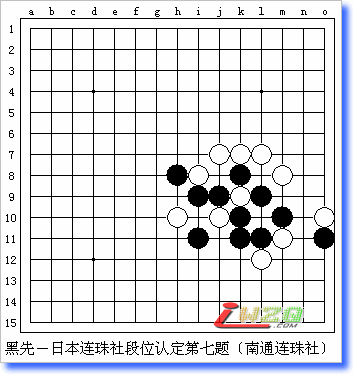

日本连珠社段位认定题目〔共11题〕
#1 日本连珠社段位认定题目〔共11题〕作者：有志青年 发表时间：2006-2-16 17:14:09
1、可以看图拆解，称之为目测吧。
2、这样所有题目的查看均不需要安装java虚拟机，也就不会出线看不到的情况了。
3、所有题目均可以在本地进行拆解，复制截图下方的棋谱代码，在打谱软件中打开就可以进行拆解，具体操作如下：
方法一：用爱五子棋打谱软件看谱拆解：
a、运行爱五子棋打谱软件[此处下载]
b、选中习题图下方的棋谱代码并复制
c、选择爱五子棋打谱软件“论坛”菜单，选择下方“输入南通连珠代码”命令
d、在弹出的窗口中粘贴棋谱代码。
方法二：用五子妙手软件看谱拆解：
a、运行五子妙手软件[此处下载]
b、选中习题图下方的棋谱代码并复制
c、选择五子棋妙手软件“棋谱”菜单，选择“打开特殊谱”->“打开iwzq棋谱”
d、在弹出的窗口中粘贴棋谱代码
e、注意：此时出线的棋谱和原谱是上下颠倒的，可以点击“垂直”按钮，即可。
4、一般来说，所有题目均不给出标准答案，如果在解题的时候有疑惑，可以复制对应的棋谱代码到交流区的习题解答板块中提问交流。
原文地址：http://www.renjusha.net/dankyu.htm
初段・・・１１問正解者
１級・・・１０問正解者
２級・・・ ９問正解者
３級・・・ ８問正解者
４級・・・ ７問正解者
５級・・・ ６問正解者
６級・・・ ５問正解者
７級・・・ ４問正解者
８級・・・ ３問正解者
９級・・・ ２問正解者
１０級・・・ １問正解者
１０級以下・・ 無正解
#2 第一题作者：有志青年 发表时间：2006-2-16 17:17:10
h8i8i7j9j8k8k7l8m9l7j6l6j7m6i10i6i5g9n5g7g6f5
#3 第二题作者：有志青年 发表时间：2006-2-16 17:34:44
h8i8j9l9k9l8m9l10k10k11l11j11j10i11i10h10j12j13k12k13k14
#4 第三题作者：有志青年 发表时间：2006-2-16 17:36:28
h8h7i7k5j6l7k7l8m9l9l10i9j9j8k9h11i10j11
#5 第四题作者：有志青年 发表时间：2006-2-16 17:38:13
h8h9i8i9j9g8g9j8f9j7k7h7i7e7f7f6g7j6h6
#6 第五题作者：有志青年 发表时间：2006-2-16 17:43:07
h8i8h9i9i10h10j12i11j9j11k9k10m9l10k8l7k7m7l8j6
#7 第六题作者：有志青年 发表时间：2006-2-16 17:46:23
h8h7g8g6g7h9f7h10e7e6c6d7d8c7e9e8e10f9d10d9g10g11f11c11i11i12h12
#8 第七题作者：有志青年 发表时间：2006-2-16 17:48:18

h8i8k8m8i7j9j7k9l7l9k6k7k5j6m6m5l5l4o5o6i5h6
#9 第八题作者：有志青年 发表时间：2006-2-16 17:50:03
h8i8i7h7j7k7h6i6i5j6j5g5m7l8j8k9j9i9i10j10h10g11k11
#10 第九题作者：有志青年 发表时间：2006-2-16 17:51:39
h8h9i8i9h7i7j7k7g7f7g6h6i6j6f6f5g5g4f3f4
#11 第十题作者：有志青年 发表时间：2006-2-16 17:53:30
h8g8h7i8h9h10h11h12i11i10j10i9k9j9j8l8k8m8l7k7l6j6i5
#12 第十一题作者：有志青年 发表时间：2006-2-16 17:55:53
h8i8j8k8f8e8f7f6e6h7i7j6i6m7l7g9h9i9j9i10k9l10i11h10g10g12g11e10
#13 Re:日本连珠社段位认定题目〔共11题〕作者：飞翔 发表时间：2006-2-18 18:43:21
怎么不好发谱？#14 Re:日本连珠社段位认定题目〔共11题〕作者：有志青年 发表时间：2006-2-18 21:42:11
发帖的时候，选择：代码模式#15 Re:日本连珠社段位认定题目〔共11题〕作者：江南新绿 发表时间：2006-2-19 22:40:57
这个从日本网上看来的？我跟着点过去怎么看不明白。
记得这个是某一年的测试题，五林网上也能找到。
#16 Re:Re:日本连珠社段位认定题目〔共11题〕作者：有志青年 发表时间：2006-2-20 14:08:36
引用：
原文由 江南新绿 发表于 2006-2-19 22:40:57 :这个从日本网上看来的？我跟着点过去怎么看不明白。
记得这个是某一年的测试题，五林网上也能找到。
？哪个看不明白
#17 答案[第一题]作者：有志青年 发表时间：2006-2-20 14:11:43
#18 Re:日本连珠社段位认定题目〔共11题〕作者：飞翔 发表时间：2006-2-20 14:18:37
第二题答案
#19 Re:日本连珠社段位认定题目〔共11题〕作者：飞翔 发表时间：2006-2-20 14:24:49
第三题答案
#20 Re:日本连珠社段位认定题目〔共11题〕作者：飞翔 发表时间：2006-2-20 14:29:05
第四题答案
#21 Re:日本连珠社段位认定题目〔共11题〕作者：飞翔 发表时间：2006-2-20 14:31:58
第五题答案
#22 Re:日本连珠社段位认定题目〔共11题〕作者：飞翔 发表时间：2006-2-20 14:35:44
第六题 抓禁手
#23 Re:日本连珠社段位认定题目〔共11题〕作者：飞翔 发表时间：2006-2-20 14:41:44
第七题 vcf
#24 Re:日本连珠社段位认定题目〔共11题〕作者：飞翔 发表时间：2006-2-20 14:45:44
第八题 抓禁手
#25 Re:日本连珠社段位认定题目〔共11题〕作者：飞翔 发表时间：2006-2-20 14:49:01
第九题答案
#26 Re:日本连珠社段位认定题目〔共11题〕作者：飞翔 发表时间：2006-2-20 14:54:16
第十题 答案
#27 Re:日本连珠社段位认定题目〔共11题〕作者：飞翔 发表时间：2006-2-20 15:06:36
十一题答案29手和35手解禁的妙手此题用黑石算的哈哈：）
#28 Re:日本连珠社段位认定题目〔共11题〕作者：耳日 发表时间：2006-3-8 15:44:41
什么意思不明白
#29 Re:日本连珠社段位认定题目〔共11题〕作者：梦之岛黄飞鸿 发表时间：2006-6-6 9:11:11
怎么没有答案呀。#30 Re:日本连珠社段位认定题目〔共11题〕作者：xialin 发表时间：2006-8-19 14:10:21
第6题答案有点问题~黑为什么不先冲D6？虽然还是抓禁，是在右边。
#31 Re:日本连珠社段位认定题目〔共11题〕作者：珊瑚草 发表时间：2007-5-24 16:46:32
11题乱 黑有三的时候 白早就四抓了黑的禁手了
#32 Re:日本连珠社段位认定题目〔共11题〕作者：紫风铃 发表时间：2007-5-30 8:12:33
老师辛苦了，谢谢！可还差１０和１１两题，可以上传吗？#33 Re:日本连珠社段位认定题目〔共11题〕作者：lilied 发表时间：2007-7-21 12:52:34
第六题黑可以先D6 I10 G11 其实胜在右边~~#34 Re:日本连珠社段位认定题目〔共11题〕作者：冥府黑无常 发表时间：2007-7-30 14:05:12
感觉不怎么样!一般,有些简单#35 Re:日本连珠社段位认定题目〔共11题〕作者：蜗牛 发表时间：2007-9-15 10:12:39
为什么我看不到 图啊！～～～～#36 Re:日本连珠社段位认定题目〔共11题〕作者：沙漠中的骆驼 发表时间：2008-11-22 11:47:38
收藏了，有时间试试。#37 Re:日本连珠社段位认定题目〔共11题〕作者：木头小美 发表时间：2008-11-29 14:03:53
31楼，黑29后，J10就不是禁手点了。而在黑E9之后，J10的禁手又被解了。重新认识下禁手的意义吧。#38 Re:日本连珠社段位认定题目〔共11题〕作者：黑白不分 发表时间：2008-12-15 13:07:25
新手，不懂什么意思，几问整解者什么意思啊？还有让那方赢啊？#39 Re:日本连珠社段位认定题目〔共11题〕作者：山巅一士 发表时间：2008-12-29 12:56:57
看不见答案啊#40 Re:日本连珠社段位认定题目〔共11题〕作者：学海无涯苦作舟 发表时间：2009-1-7 19:49:28
第六题的解答明显存在很大的漏洞！黑明显可以先冲四不给你抓的机会，我的理解是白棋33胜利而不是抓黑棋禁手！看我生成的代码！h8h7g8g6g7h9f7h10e7e6c6d7d8c7e9e8e10f9d10d9g10g11f11c11i11i12h12c8h6f8c10f10a10b10f5e13
#41 Re:Re:日本连珠社段位认定题目〔共11题〕作者：唐锦荣 发表时间：2009-1-23 22:48:22
=======上图对应的爱五子棋谱代码如下，以便你拆解：========
h8h9i8i9h7i7j7k7g7f7g6h6i6j6f6f5g5g4f3f4L8
======================================================
#42 Re:Re:日本连珠社段位认定题目〔共11题〕作者：唐锦荣 发表时间：2009-1-23 23:05:18
有误=======上图对应的爱五子棋谱代码如下，以便你拆解：========
======
=======上图对应的爱五子棋谱代码如下，以便你拆解：========
h8g8h7i8h9h10h11h12i11i10j10i9k9j9j8l8k8m8l7k7l6j6i5i6i7m11
======================================================================================================
［ 有志青年 于 2009-1-24 7:33:26 时奖励此帖[金币加 20 威望加1］
#43 Re:第九题作者：唐锦荣 发表时间：2009-1-23 23:28:05
=======上图对应的爱五子棋谱代码如下，以便你拆解：========
h8h9i8i9h7i7j7k7g7f7g6h6i6j6f6f5g5g4f3f4l8j8g8
======================================================
#44 Re:日本连珠社段位认定题目〔共11题〕作者：不会玩 发表时间：2009-2-12 3:38:36
楼上的第九题有强防，白22防在k9点，黑石算的#45 Re:日本连珠社段位认定题目〔共11题〕作者：千羽鹤 发表时间：2009-2-12 12:25:22
第六题如果黑先冲4则直接抓33第九题解禁手想了好久。。。。第11题有经验了反而容易些了，不过做出来就初段？我感觉有点简单，除了VCF的题其他都是3，4手的事
#46 Re:日本连珠社段位认定题目〔共11题〕作者：知易行难 发表时间：2009-3-4 9:24:47
哈哈,都解出来拉,有初段了么~
#47 Re:日本连珠社段位认定题目〔共11题〕作者：孤影锁寒楼 发表时间：2009-3-5 17:06:27
学习方式真好,好好学习一下#48 Re:日本连珠社段位认定题目〔共11题〕作者：越狱行辕 发表时间：2009-3-5 17:27:35
我太弱了
#49 Re:日本连珠社段位认定题目〔共11题〕作者：五子天涯 发表时间：2009-4-28 0:35:43
探讨第六题
=======上图对应的爱五子棋谱代码如下，以便你拆解：========
h8h7g8g6g7h9f7h10e7e6c6d7d8c7e9e8e10f9d10d9g10g11f11c11i11i12h12
======================================================
飞翔的答案是错的
=======上图对应的爱五子棋谱代码如下，以便你拆解：========
h8h7g8g6g7h9f7h10e7e6c6d7d8c7e9e8e10f9d10d9g10g11f11c11i11i12h12c8f5b9a10c9
======================================================
黑先冲四，再防活三，白棋如何胜？
=======上图对应的爱五子棋谱代码如下，以便你拆解：========
h8h7g8g6g7h9f7h10e7e6c6d7d8c7e9e8e10f9d10d9g10g11f11c11i11i12h12c8c10f10h6f8f5
======================================================
这是学海无涯苦作舟的答案。但是，黑33如果不冲四，白棋还有三三胜吗？
=======上图对应的爱五子棋谱代码如下，以便你拆解：========
h8h7g8g6g7h9f7h10e7e6c6d7d8c7e9e8e10f9d10d9g10g11f11c11i11i12h12c8h6f8c10f10a10b10f5e13
======================================================
捉禁手胜
=======上图对应的爱五子棋谱代码如下，以便你拆解：========
h8h7g8g6g7h9f7h10e7e6c6d7d8c7e9e8e10f9d10d9g10g11f11c11i11i12h12c10h6f8f5i9j8j9g9l9
======================================================
［ 有志青年 于 2009-4-28 7:29:13 时奖励此帖[金币加 20 威望加1］
#50 Re:日本连珠社段位认定题目〔共11题〕作者：可乐可口 发表时间：2009-5-25 12:03:20
7、8怎么也不会做
第9题反倒很容易就做出来了，我是个什么水平？
#51 Re:日本连珠社段位认定题目〔共11题〕作者：我爱棋 发表时间：2009-6-14 20:25:22
第二题不全，黑有强防，如下
=======上图对应的爱五子棋谱代码如下，以便你拆解：========
h8i8i10h10j10i11j9j11k10k11k9l10l11l9m9l8j12j13k12k13k14
======================================================
=======上图对应的爱五子棋谱代码如下，以便你拆解：========
h8i8i10h10j10i11j9j11k10k11k9l10l11l9m9l8k12j13j12k13k14l13n13m12h13h11g11m13i13m11m10m15m14l12
======================================================
23M13，然后25H13，这样白棋步骤多一点，但同样是抓禁手胜
［ 有志青年 于 2009-6-14 20:52:25 时奖励此帖[金币加 20 威望加1］
#52 Re:日本连珠社段位认定题目〔共11题〕作者：唐门小虎 发表时间：2009-7-9 16:10:57
这些题我都目算出答案了，但是这样就能有初段的水平了吗，不止这样吧，我感觉我还没到初段水平，我连黑石都下不过，真不知道具体初段是个什么水平啊#53 Re:日本连珠社段位认定题目〔共11题〕作者：我能我能我能 发表时间：2009-8-7 13:42:43
11题黑走29的时候 白走K6抓禁了 这是常识啊 你是杂么搞的
#54 Re:日本连珠社段位认定题目〔共11题〕作者：没事下下棋 发表时间：2009-8-12 10:24:57
=======上图对应的爱五子棋谱代码如下，以便你拆解：========
h8i8i7j9j8k8k7l8m9l7j6l6j7m6i10i6i5g9n5g7g6f5j4j5l4k5h4g3i4k4f4g4h6g5h7h5h10h9i9g11l10k9j10k10k11
======================================================
#55 Re:日本连珠社段位认定题目〔共11题〕作者：就不帅 发表时间：2009-11-19 5:07:18
全做出来了，嘿嘿，我也有一段吗?#56 Re:日本连珠社段位认定题目〔共11题〕作者：像傻瓜一个的笨蛋 发表时间：2009-11-19 19:46:56
这个题目本身也没要求我们做什么啊？解？是解除危机，还是进而胜利？
飞翔第二题的答案真是正解？？
#57 Re:唐门小虎【==Re:日本连珠社段位认定题目〔共11题〕==】作者：陶涛业余 发表时间：2012-4-15 15:19:09
黑石的水平好像不止初段，我想问一下，这些题答题有没有时间限制？比如说几分钟以内？#58 Re:我能我能我能【==Re:日本连珠社段位认定题目〔共11题〕==】作者：尕孩 发表时间：2012-6-10 19:50:01
引用：
原文由 我能我能我能 发表于 2009-8-7 13:42:43 :11题黑走29的时候 白走K6抓禁了 这是常识啊 你是杂么搞的
親，是這樣子的，這是以禁解禁~因為29后，J11系44禁 所以J10不是禁噢~然後f10 e9 就可以贏咯~
附圖一張~就不擺譜咯~